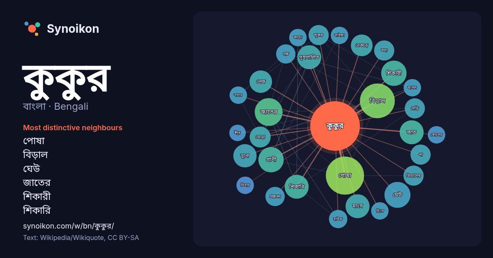

বাংলা · Bengali · popular word
কুকুর
“dog” · The words found around it in 1151 instances from Bengali Wikipedia, Wikiquote.

Most distinctive neighbours
- পোষা 38×
- বিড়াল 33×
- ঘেউ 20×
- জাতের 19×
- শিকারী 17×
- শিকারি 17×
- গৃহপালিত 16×
- জাত 16×
- বুনো 15×
- নেকড়ে 14×
- মাংস 14×
- লেজ 14×
- নেড়ি 13×
- প্রাণী 13×
- শূকর 12×
- বিড়ালের 12×
- ঘোড়া 12×
- বন্য 11×
- হাউন্ড 11×
- গরু 11×
× = how many times more often than in general Bengali Wikipedia text.
Most frequent neighbours
- পোষা 43
- বিড়াল 36
- একজন 23
- জাতের 23
- নাম 23
- নামে 23
- পরিচিত 23
- ঘেউ 20
- মানুষ 20
- ধরনের 19
- প্রাণী 19
- শিকারী 19
- গৃহপালিত 17
- জাত 17
- মাংস 17
- শিকারি 17
- বুনো 16
- করেছিল 15
- বড় 15
- মানুষের 15
In context
- কুকুর কার্নিভোরা (Carnivora) অর্থাৎ শ্বাপদ বর্গ ভুক্ত এক প্রকারের মাংসাশী স্তন্যপায়ী, মনিব ভক্ত সবচেয়ে বিশ্বস্ত প্রাণী। প্রায় ১৫ হাজার বছর আগে একপ্রকার Wikipedia snippets · কুকুর
- কুকুর পাঠিয়েছিল। উদ্দেশ্য ছিল, সেখানে মানুষ পাঠানো নিরাপদ কি-না তা নির্ণয় করা। এই সময়ের মধ্যে সোভিয়েত নভোযানগুলোতে সর্বোচ্চ ৫৭টি পর্যন্ত কুকুরকে একসাথে Wikipedia snippets · সোভিয়েত মহাকাশ কুকুর
- কালো লেজ প্রেইরি কুকুর (Cynomys ludovicianus) সিউরিডে পরিবারের একটি কুকুর যেটি যুক্তরাষ্ট্র-কানাডা সীমান্ত এলাকা থেকে যুক্তরাষ্ট্র-মেক্সিকো সীমান্ত এলাকা Wikipedia snippets · কালো লেজ প্রেইরি কুকুর
- বেওয়ারিশ কুকুর হলো কিছু অনিয়ন্ত্রিত কুকুর যেগুলো শহরে বাস করে। বৈজ্ঞানিক সাহিত্যে এই কুকুরগুলো অবাধ শহুরে কুকুর হিসাবে পরিচিত। । যেখানেই শহর বিদ্যমান Wikipedia snippets · বেওয়ারিশ কুকুর
- কুকুর ও তার প্রতিফলন (অথবা পরবর্তী অনুবাদে ছায়া) হল ঈশপের কল্পকাহিনীগুলির মধ্যে একটি এবং এটি পেরি সূচকে ১৩৩ নম্বরে রয়েছে। গ্রীক ভাষার মূল গল্পটি ল্যাটিন Wikipedia snippets · কুকুর ও তার প্রতিফলন
- এরা সহজ-প্রশিক্ষিত এবং রক্ষী কুকুর ও পুলিশি কুকুর হিসেবে বেশ কার্যকরী। এই কুকুরটি নেড়ি কুকুর নামে পরিচিত একটি প্রাচীন কুকুর দলের জাত। প্রত্নতাত্ত্বিক নজির Wikipedia snippets · দেশী কুকুর
- বাংলা কুকুর জীব (বৈজ্ঞানিক নাম: Cynoglossus cynoglossus) (ইংরেজি: Bengal tongue sole) হচ্ছে Cynoglossidae পরিবারের Cynoglossus গণের একটি স্বাদুপানির মাছ। Wikipedia snippets · বাংলা কুকুর জিব
- টেমপ্লেট:Infobox Dogbreed কোলের কুকুর বা কোলের কুকুরজাতীয় প্রাণী হলো এমন একটি কুকুর, যা হাতে ধরে রাখা বা কোনো ব্যক্তির কোলে স্বাচ্ছন্দ্যে শুয়ে থাকার Wikipedia snippets · কোলের কুকুর
More Bengali words
- অরণ্য
- আয়না
- ইতিহাস
- ঈশ্বর
- কাজ
- ক্ষমতা
- খাদ্য
- গান
- গ্রীষ্ম
- ঘড়ি
- ঘণ্টা
- ঘোড়া
- ছায়া
- জননী
- জলবায়ু
- জীবন
- ঝড়
- টাকা
- ট্রেন
- দারুচিনি
- দ্বীপ
- নক্ষত্র
- নীরবতা
- পরিবার
- পানি
- পাহাড়
- প্রকৃতি
- বাগান
- বিজ্ঞান
- বিড়াল
- বৃষ্টি
- ভাষা
- মধু
- মরুভূমি
- মানচিত্র
- মৃত্যু
- রাস্তা
- রুটি
- লবণ
- শরৎ
- শহর
- শিল্প
- শীত
- সত্য
- সময়
- সেতু
- সোনা
- স্বাস্থ্য
- হৃদয়
Precomputed on 2026-10-09 with default settings (±5 words, medium corpus). The interactive map can refresh it with live data.